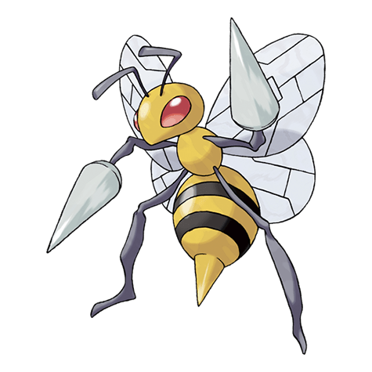

Назад
Бидрилла

Бидрилла — Покемон 1 поколения под номером 15 в Покедекс. Обитает он в регионе Канто и относится к Ядовитому и Жучиному типу. Это последняя постоянная стадия эволюции Покемона Видла. Бидрилла чрезвычайно территориален. Никто никогда не должен приближаться к его гнезду — ради своей же безопасности. Если эти Покемоны рассердятся, они нападут яростным роем.
Тип:
Жук
Ядовитый
Эволюция
# 015 Бидрилла
Финальная стадия